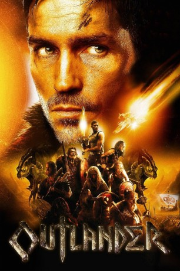
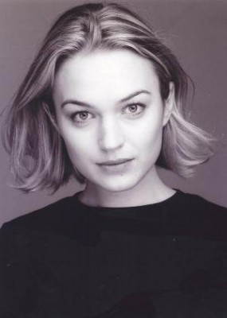
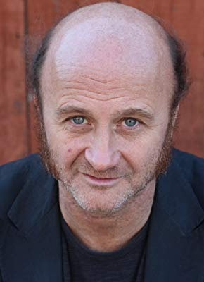

#1215 Outlander
 
 IMDB-Wertung: 6.3 / 10
IMDB-Wertung: 6.3 / 10  Metascore: 40
Metascore: 40 
709 nach Christus: Der Raumfahrer Kainan stürzt mit seinem Raumschiff inmitten von Wikinger-Clangebiet ab, seine Crew stirbt bei dem Unglück, doch Kainan ist trotzdem nicht allein gekommen. Denn den Absturz hatte ein Moorwen, eine reißende Bestie außerirdischen Ursprungs, zu verantworten. Bei seiner Jagd auf den Moorwen wird Kainan von Wikingern gefangen genommen, die dem angeblichen Drachenjäger erst nicht glauben. Bis der Moorwen beginnt über ihre Siedlungen herzufallen...
Jahr: 2008
Dauer: 115 Minuten
FSK: 16
Land: USA Studio: Third Rail ReleasingTonspuren: DTS - ,
Untertitel: Deutsch,
Auflösung: 720p (1280x544) Größe: 7434 MB
Genre: Action, Abenteuer, Sci-Fi
Regisseur: Howard McCain
Drehbuch: Dirk Blackman, Howard McCain
Soundtrack: Geoff Zanelli
Darsteller:
 Jim Caviezel als Kainan
Jim Caviezel als Kainan-  Sophia Myles als Freya
 Jack Huston als Wulfric
Jack Huston als Wulfric John Hurt als Hrothgar
John Hurt als Hrothgar- Patrick Stevenson als Unferth
 Aidan Devine als Einar
Aidan Devine als Einar Ron Perlman als Gunnar
Ron Perlman als Gunnar John Nelles als Donal
John Nelles als Donal James Preston Rogers als Bjorn
James Preston Rogers als Bjorn- Katie Bergin als Sonja
 Ted Ludzik als Olaf
Ted Ludzik als Olaf- Bryan Renfro als Grey-haired Warrior
 Danny Lima als Slave
Danny Lima als Slave Simon Northwood als Warrior #1
Simon Northwood als Warrior #1- Todd Schroeder als Warrior #2
- Bart Lovett als Stabbed Sentry
- Ricardo Hoyos als Jon , uncredited
- Amy Kerr als Bored Kitchen Wench , uncredited
- Todd Sandomirsky als Shishkebob , uncredited
- Colette Stevenson als , uncredited
-  Cliff Saunders als Boromir
- Bailey Maughan als Erick
- Scott Owen als Aethril
- Petra Prazak als Mara
- Owen Pattison als Galen, son of Kainen
- Matt Cooke als Captain
- Todd Godin als Lars
- Mauralea Austin als Jona
- Matthew Amyotte als Arn
- John Beale als Edmund
- James Binkley als Leader
- Liam McNamara als Finn
- Jon K. Loverin als Sheepherder
- Andrew Albert als Drunken Reveler #1
- Brian Heighton als Trader
- Glenn Wadman als Waling Man
- Martha Irving als Weeping Woman
- Tess McCain als Viking Girl
- Brent MacRae als Viking Warrior
- Drakaina als Kitchen wench , uncredited
- Michael Ray Fox als Alien Warrior , uncredited
- J. William Grantham als Drunken Reveler , uncredited
- Allyson Haas als Villager , uncredited
- Craig Harris als Viking Warrior , uncredited
- Mark A. Owen als Raider , uncredited
- Steven Wendland als Viking Warrior , uncredited
Datei: X:\2008(N-Z)\Outlander (2008, FSK16, 1280x544).mkv seit 04.06.2015
Festplatte: HD 2008(G-Z)-2009(A-F)
 Es gibt insgesamt 91 Filme in der Gruppe '2008(N-Z)'
Es gibt insgesamt 91 Filme in der Gruppe '2008(N-Z)'